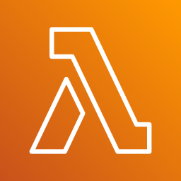
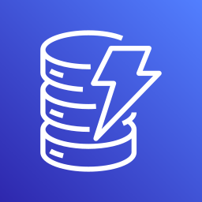
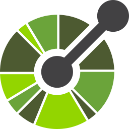
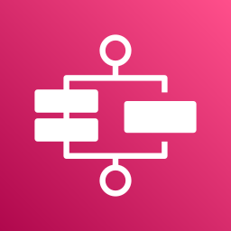

Harness & Sandbox |
Your runtimeNo built-in sandbox; graphs run in LangSmith Deployment or your own containers. |
Docker code modeallow_code_execution with code_execution_mode="safe" runs agent code in Docker. |   Per-session microVM isolation, managed Code Interpreter; action groups run in Lambda. | In-process + AgentCoreThe loop runs in your process; AgentCore Runtime adds session isolation. | Agent ServiceHosted runs with a sandboxed Code Interpreter for generated code. | Code execution + containersServer-side code execution tool; Managed Agents give each session a container. |
Code execution + Agent EngineBuilt-in code_execution tool and ADK code executors; Agent Engine hosting. |
|---|
State & Data | Typed state + checkpointersReducers merge updates; Postgres, SQLite or Redis checkpointers enable resume and time travel. | Flow state + crew memoryPydantic Flow state with @persist; short-term, long-term and entity memory. |  sessionAttributes, prompt attributes, session summaries and AgentCore Memory. | agent.state + sessionsJSON agent.state, conversation managers and File or S3 session managers. | ThreadsServer-side threads and runs; Standard setup stores threads in your Cosmos DB. |
Client-owned messagesHistory sent each turn, compaction and the memory tool; SDK sessions resume by id. |
Scoped session statesession.state with user:, app: and temp: prefixes; database or Vertex AI sessions. |
|---|
Function Calling |
@tool + ToolNodeDocstrings and type hints become the schema; ToolNode runs calls inside the graph. |
@tool / BaseToolPydantic args_schema validation, the crewai-tools library and per-task tools. |  OpenAPI or function schemas executed by Lambda; Converse toolSpec schemas. | @tool decoratorTyped Python functions become tools; strands-agents-tools ships ready-made tools. | FunctionTool + OpenAPIAuto function calling plus Azure Functions, OpenAPI and Logic Apps tools. | Tool Runner + strict toolsJSON-schema tools with strict: true and parallel calls; the Tool Runner drives the loop. |
Automatic function callingPython functions as tools; FunctionDeclarations for manual control. |
|---|
Edge Deployment |
Runs anywherePure Python or JS; pair with local models through Ollama on edge servers. |
Local PythonRuns on local hardware with Ollama or llama.cpp models through LiteLLM. | Cloud serviceNo on-device runtime; use AWS IoT Greengrass with local models at the edge. | Local model providersOllamaModel and other local providers; the Python agent runs on edge hosts. | Foundry LocalRun models on-device with Foundry Local and ONNX Runtime; Azure IoT Edge. | Cloud APIModels run in the cloud; an edge host can run the Agent SDK and call the API. |
Gemini Nano + GemmaGemini Nano on Android and Chrome; open Gemma models locally. |
|---|
Start & Stop |
invoke / stream / resumerecursion_limit caps steps; cancel and resume from the last checkpoint. |
kickoff / max_iterkickoff, kickoff_async, kickoff_for_each; max_iter and max_execution_time stop runs. | invoke_agent / endSessionStreaming sessions by sessionId; endSession closes; stopReason on Converse. | agent() / stream_asyncSync, async and streaming calls; Swarm and Graph timeouts and handoff limits. | Runs: create / cancelRun statuses from queued to completed; runs.cancel and token caps. | stream + stop_reasonend_turn, tool_use, pause_turn and refusal; ClaudeSDKClient.interrupt(). |
run_async eventsEvent stream to a final response; max_llm_calls; escalate exits loops. |
|---|
Testing & Eval |
LangSmith evalsUnit-test nodes; datasets, LLM judges and trajectory evals. |
crewai testScores each task over N runs; crewai train adds human feedback. | Bedrock EvaluationsLLM-as-judge jobs for models, Knowledge Bases and agents; test-alias traces. | pytest + metricsTest tools as functions and assert on tool metrics; LLM-judge eval sets. | azure-ai-evaluationGroundedness, intent, tool-call accuracy and safety evaluators; red teaming. |
Evals + BatchesCode and LLM graders; large eval sets through the Batches API. |
adk evalTool-trajectory and response-match scores; AgentEvaluator in pytest. |
|---|
Auditing & Tracing |
LangSmith tracesNode-level trace trees; checkpoint history as a replayable audit log. |
Event listenersEvent-bus listeners, log files, and Langfuse or AgentOps integrations. | Invocation logs + CloudTrailPrompt and response logs to CloudWatch or S3; API audit in CloudTrail. |
OpenTelemetry built inSpans for every cycle, model and tool call to X-Ray, CloudWatch or Langfuse. |
Application InsightsOpenTelemetry tracing of runs and tool calls; Azure Monitor. |
Usage logs + hooksRequest ids and token usage; Agent SDK hooks log tool calls. |
Cloud TraceADK spans; events record author, calls and state deltas. |
|---|
Orchestration |
Supervisor / swarm graphsSubgraphs, Command handoffs, Send fan-out, prebuilt supervisor and swarm. |
Crews + FlowsSequential or hierarchical crews; Flows chain crews with routers. |  Supervisor and collaborator agents; Flows and Step Functions. | Swarm, Graph, agents-as-toolsModel-driven or explicit multi-agent patterns; A2A protocol. | Connected agentsAgents as tools; Agent Framework sequential, concurrent, handoff and group chat. | SubagentsAgent SDK subagents with isolated context; Managed Agents multi-agent workflows. |
Workflow agentsSequential, Parallel and Loop agents; sub-agent transfer; AgentTool; A2A. |
|---|
Guardrails |
Guard nodes + middlewareValidator nodes route to END; PII and call-limit middleware. |
Task guardrailsFunction or LLM guardrails retry failing outputs with feedback. | Bedrock GuardrailsContent filters, denied topics, PII masking, grounding and Automated Reasoning checks. | Guardrails + hooksBedrock Guardrails on the model; hooks block or cancel tool calls. | Content SafetyContent filters, Prompt Shields, groundedness and protected-material detection. | Hooks + permissionsPreToolUse hooks deny calls; tool allow and deny lists; refusal stop reason. |
Callbacks + Model Armorbefore_model and before_tool callbacks; safety settings; Model Armor. |
|---|
RAG Pipeline | Agentic RAG graphsRetrieve, grade and rewrite loops over any LangChain vector store. | Knowledge + RAG toolsKnowledge sources per agent or crew; PDF, web and vector search tools. | Knowledge BasesManaged ingestion, chunking and vector stores with filters and citations. | retrieve toolQueries Bedrock Knowledge Bases; custom vector tools for other stores. | AI Search + File SearchHybrid vector and semantic search, managed vector stores, Bing grounding. | CitationsBring your own retrieval; document blocks return cited spans. |
File Search / RAG EngineManaged File Search stores; Vertex AI RAG Engine and Search grounding. |
|---|
MCP Integration |
MCP adaptersMultiServerMCPClient loads stdio and HTTP servers as LangChain tools. |
MCPServerAdapterStdio, SSE and streamable-HTTP servers exposed as CrewAI tools. | AgentCore GatewayTurns Lambda and OpenAPI targets into a secured MCP endpoint. | MCPClientNative MCP client for stdio, SSE and streamable HTTP. | McpToolRemote MCP servers with tool allow-lists and approval modes. | MCP connectorThe API calls remote MCP servers directly; the Agent SDK runs local ones. |
MCPToolsetConnects ADK agents to MCP servers with tool filters. |
|---|
MLOps / LLMOps | LangSmith Deploymentlanggraph.json, container builds, assistant versions and eval gates. |
CrewAI AMPcrewai deploy exposes crews as APIs; versioned YAML configs. | Versions + aliasesImmutable agent versions, alias rollouts, CloudFormation or CDK. | AgentCore / LambdaBedrockAgentCoreApp entrypoint; Lambda, Fargate or EKS. |
GenAIOpsEvals in CI, Bicep or Terraform deploys, continuous evaluation. |
Pinned models + versionsEval-gated model changes; Managed Agents versions and schedules. |
Agent Engine / Cloud Runadk deploy to Vertex AI Agent Engine or Cloud Run. |
|---|
Human-in-the-Loop |
interrupt()Pause any node; resume with Command(resume=...) to approve or edit. |
human_input=TrueTasks pause for reviewer feedback; Flow routers queue risky cases. | Return of controlHands planned actions back to the app; per-function user confirmation. | InterruptsBeforeToolCall hooks pause for approval; handoff_to_user tool. | requires_actionRuns pause for tool outputs or MCP approvals before continuing. | can_use_toolApprove or deny each tool call; permission modes set defaults. |
Tool confirmationrequire_confirmation on tools; long-running tools for async approvals. |
|---|
skills.md
|
Prompts per nodeLoad skill files into node prompts and route to them with conditional edges. | agents.yamlRole, goal and backstory per agent carry each skill description. | Agent instructionsInstructions plus prompt-override templates per orchestration step. | system_promptLoad skill files into the system prompt or specialist agents-as-tools. | Agent instructionsInstructions per agent; connected agents for separate skills. | Agent Skills (SKILL.md)Skill folders with SKILL.md load on demand in the API and Agent SDK. |
Instructions + sub-agentsSkill text in instructions; sub-agent descriptions drive routing. |
|---|
memory.md
|
Store namespacesMemory notes in the long-term Store, written by a memory node. |
Knowledge + external memoryText knowledge sources or Mem0-backed external memory. | AgentCore MemorySession summaries and long-term memory strategies. | Sessions + mem0 toolSession managers persist state; the mem0_memory tool keeps long-term notes. | Threads + filesThread history plus a File Search store holding memory notes. | CLAUDE.md + memory toolThe Agent SDK loads CLAUDE.md; the memory tool reads and writes memory files. |
Memory BankMemoryService and load_memory recall long-term facts. |
|---|
tools.md
|
Tool docstringsGenerate tools.md from @tool names, docstrings and Pydantic args. |
BaseTool schemasname, description and args_schema document each tool. | OpenAPI schemasAction-group OpenAPI or function-detail definitions. | @tool docstringsDocstrings become tool specs; tools can load from a directory. | OpenAPI specsFunction definitions and OpenAPI tool specs per agent. | JSON-schema toolsName, description and input_schema; MCP servers describe their own tools. |
FunctionDeclarationsFunction docstrings or explicit declarations describe each tool. |
|---|
LLM Training / Tuning |
Model-agnosticUse LangSmith traces as datasets; fine-tune in your model platform. |
crewai trainHuman feedback improves agent guidance; tuned models via LiteLLM. | Custom modelsFine-tuning, continued pre-training, distillation and model import. | Bedrock or SageMaker modelsPoint the model provider at a tuned Bedrock or SageMaker model. | Fine-tuning + distillationSupervised, preference and reinforcement fine-tuning for supported models. |
Prompting over tuningSteer with prompts, Skills, examples and effort; no first-party fine-tuning. |
Vertex AI tuningSupervised and preference tuning for Gemini; LoRA for Gemma. |
|---|